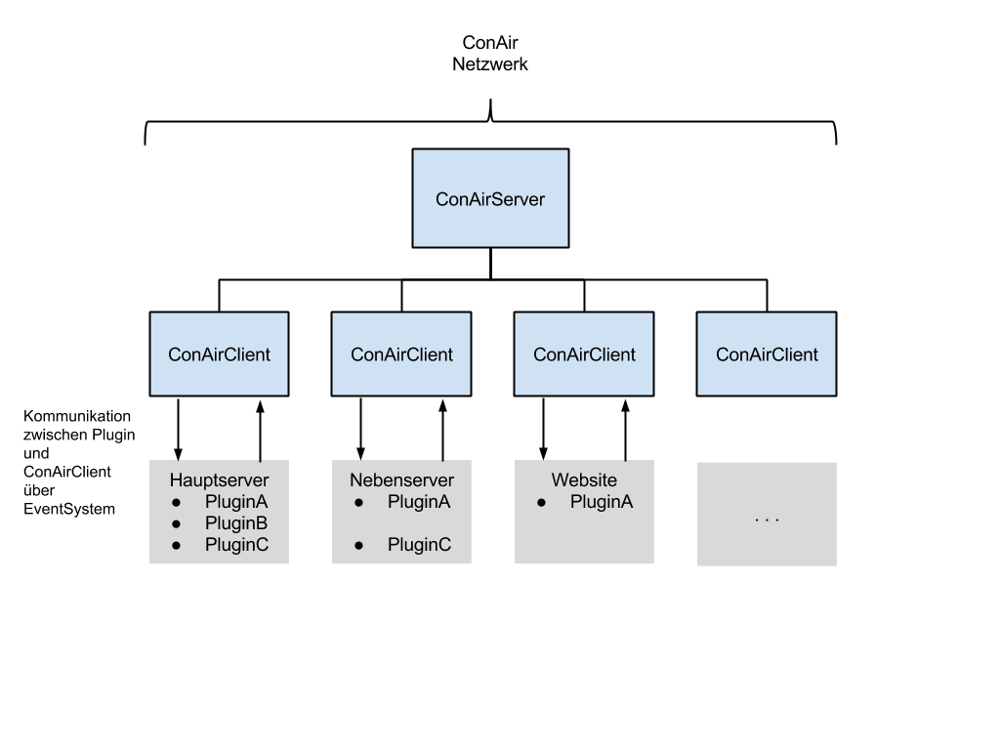

Ziel dieses Milestone ist die Vorbereitung und allgemeine Planung wie z.B. das Erstellen dieses Projektplanes.
Ziel dieses Milestones ist die Erstellung von Tools und Libraries, die unabhängig von dem Plugin API entwickelt werden können. Diese können dann von den Plugins integriert werden und durch die vorläufige Entwicklung wird eine höhere Stabilität erreicht.
Das ConAir System bietet eine Schnitstelle an, damit Plugins serverübergreifend kommunizieren können. So kann z.B. der Chat synchronisiert werden und Kommandos von einem Server auf einem anderem Server abgesetzt werden. Durch das neue ConAir System kann auch eine Website in das Netzwerk eingebunden werden, um so Admins eine einfachere Kontrolle zu ermöglichen.
Wichtig!
Eine Implementierung der serverübergreifenden Kommunikation sowie die angesprochene Website wird erst in späteren Milestones behandelt. 
Ein Permissionsystem ist unablässig für die Benutzung der Plugins. Es muss geregelt sein, dass nur bestimmte Nutzergruppe bestimmte Befehle ausführen dürfen. So sollen beispielsweise nur Administratoren User bannen können, aber alle User Warp Befehle benutzen können.
Das Label Idee wurde verwendet, da es von dem API abhängig ist, ob ein eigenes Permission System entwickelt wird oder ein bestehendes übernommen wird.
Plugins wie z.B. MoneyPit oder FalseBook können modular aufgebaut werden. Es wird ein Kern entwickelt, an dem sich weitere Module andocken. Beispielsweise würde MoneyPit nur die Registrierung von Blöcken vornehmen, die Behandlung des Schutzes aber an das jeweile Modul weiterleiten. Dadurch können neue Blöcke und Mechanismen einfacher hinzugefügt werden.
Das Plugin System muss definitiv ein automatisches Laden und Entladen von Modulen ermöglichen, damit während der Laufzeit Updates des Systems gefahren werden können.
Ohne ein Release einer Plugin API ist dieser Milestone unvollständig.
Ziel dieses Milestone ist die Erfassung der API-Features und die Implementierung von fehlenden Features, die in den MinestarCore wandern. Inhalt ist ebenfalls die Einstellung und Konfiguration der DevTools(Eclipse, Maven, Jenkins, Nexus), die sich in die Tool Chain einreihen.
Dieses Workpackage beschäftigt sich mit dem Erfassung der Features und der allgemeinen Funktionsweise des API.
Der MinestarCore stellt Pluginübergreifende Features wie eine Datenbankverbindung, standartisierte Ausgaben auf Konsole und zum Spieler bereit. Je nach Features des API werden die Aufgaben des Core anders sein. Der Core wird auch Methoden für Permissions bereitstellen, die je nach PermissionSystem von dem API anders ausfällt.
Auf Grund der vielen Plugins, die entwickelt und gewartet werden, ist es trotz der kleinen Teamgröße wichtig, dass es standartisierte Projektstrukturen und Entwicklungen gibt. In diesem Workpackage werden deswegen die Struktur der Projekte bestimmt und die Tools Jenkins und Nexus eingerichtet.
Je nach Beschaffenheit des API kann man bereits selber Nutzergruppen und Berechtigungen anlegen. Ist dies nicht der Fall, wird dieses Workpackge die Entwicklung eines eigenen PermissionAPI behandeln.
Das PermissionAPI muss folgende Dinge können:
hasPermission(Node), sonst massive PerformanceinbrücheZiel dieses Milestones ist die Erstellung einer Pluginsammlung, um einen minimalen Betrieb des Servers zu ermöglichen. Erleichterungen wie teleportiere oder verbessertes Chatten werden nicht berücksichtigt, der Milestone konzentriert sich auf ein möglichst Grieffreies Spielen und ein Verwalten von Spielern.
MoneyPit verwaltet geschützte Blöcke und deren Zugriffe. Um Griefing und Diebstahl zu Unterbindung, muss MoneyPit eine Minimalkonfiguration bereitstellen, um folgende Dinge zu schützen:
Problematisch wird der Wegfall von SubIDs und Data bei den Blöcken. Bisher ist ungewiss, wie diese Daten gespeichert werden. Da MoneyPit viel mit SubIDs gearbeitet hat, ist dies beim Rewrite zu bedenken.
Eine Vervollständigung von MoneyPit ist in einem späteren Milestone vorgesehen. Auch wenn andere System als wichtig erscheinen, so sind sie nicht zwingend notwendig, um einen Minimalserver zu betreiben.
TheRock wird ebenfalls nur einfache, aber essenzielle Systeme implementieren. Dazu gehören:
Ebenfalls bei TheRock ist die Speicherung von Blöcken problematisch. Mit dem Wegfall von IDs, SubIDs und Data muss die Datenbank anders aufgebaut werden und eine performante Suchmethode für ID-Strings eingebaut werden.
Ein automatisches Zurücksetzen eines Bereiches und weitere Funktionen werden in einem späteren Milestone implementiert. Wird ein größerer Grief gemeldet (Zerstörung von UglyTown), wird ein Backup eingespielt. Grund ist, dass das Zurücksetzen eines Bereich einen viel höheren Schwierigkeitsgrad hat als das blanke Speichern einer Änderung.
AdminStuff beinhaltet eine Sammlung von Befehlen, die ursprünglich für Admins und Mods gedacht war. Von den aktuell 44 Stück werden in diesem Milestone nur die wichtigstens wie Bann/Kick und Glue implementiert. Auch im späteren Milestone zur Vervollständigung werden nicht alle 44 Befehle umgesetzt. Viele davon wurden von Minecraft schon nativ implementiert und sind deswegen obsolet. Andere, wie alle Chatbefehle, werden in andere Plugins verlagert.
Contao wird komplett umstrukturiert und in diesem Workpackage vollständig implementiert. Es kümmert sich nur noch um eine Synchronisierung des Minecraft Servers und der Contao Website, um Änderungen an den Gruppenzugehörigkeiten der Spieler zu synchronisieren. Folgende Features muss Contao beinhalten:
GreenMile verhindert, dass sich Feuer ausbreitet oder Creeper Schaden anrichten. Da viele User mit Feuer bauen und an die nicht explodierenden Creeper gewohnt sich, muss GreenMile dies auch in einer Minimalkonfiguration verhindern. Allgemein wird GreenMile schlanker aufgebaut. Folgende Features muss GreenMile besitzen:
Das automatische Erstellen und Generieren von Welten (wie die Goldgrube) werden in einem späteren Milestone implementiert.
SinCity kümmerte sich um Minestarspezifische Einschränkung der Nutzerrechte. So dürfen Defaultspieler keine Tiere töten und auch Probespieler nur in den Probegebieten bauen. Für dieses Workpackage muss SinCity folgendes können:
Die Survivalwelt wird nicht mehr durch SinCity geregelt und komplett entfernt. Alternativ werden neue Server gespawnt. So wird SinCity schlanker und dieses Workpackage wird schneller erreicht.
In diesem Milestone werden einfache Komfortmethoden eingebaut, die für einen laufenden Server nicht zwingend notwendig waren. Ab diesem Milestone werden diese Stück für Stück eingebaut, um den alten Stand der Technik zu erreichen.
TheRock kann bisher nur das Erfassen und Explorieren von Daten. Dieses Workpackage beschäftigt u.a. sich mit der Wiederherstellung von Gebieten. Bietet das API die Möglichkeit, einfache GUIs zu erstellen, werde diese in TheRock für die Admins zur Verfügung gestellt. Ist dies nicht möglich, wird die GUI Erstellung für TheRock in einem späteren Milestone behandelt.
FifthElement gehört nicht zur Minimalkonfiguration, da der Server auch ohne Teleportation betrieben werden kann. Dieses Workpackage kümmert sich deswegen erst jetzt um die Implementierung von FifthElement. Dazu wird das alte System nahezu 1:1 umgesetzt.
Bietet das API jedoch die Möglichkeit, eigene Blöcke einfach zu implementieren, so bekommen Warps und WarpSchilder eigene Blöcke und sind so in der Welt fest verankert. Wie auch TheRock kann FifthElement von einer eigenen GUI profitieren, dies ist jedoch nicht primär.
BuyCraft ist ein komplexes Wirtschaftssystem, das genau abgewägt werden muss. Es greift am stärksten in die Spielmechanik des Bauen und Sammeln ein. Dieses Workpackage hat folgende Features:
Da das Handelssystem ein sensibler Punkt ist, ist dies eng mit der Community abzusprechen.
Die Bereitstellung von Usershops werden in einem späteren Milestone implementiert.
DatVinci wird das Plugin, dass sich um den Chat kümmert. Als erstes soll es durch eine Färbung des Chats für Klarheit sorgen, welcher Gruppe der User angehört.
In späteren Milestones wird DatVinci dann vervollständigt.
Ziel dieses Milestone ist die Bereitstellung weiterer Komfortfunktionen wie das Fliegen oder das Handeln via Buycraft.
DatVinci bündelt die Funktionalitäten von FalseBookChat (Channels) und von AdminStuff (Flüstern) und erweitert diese. DatVinci muss für dieses Workpackage folgende Features können:
Innerhalb einer FlyZone dürfen die Besitzer und Nutzer der FlyZone fliegen, um Monumente einfacher errichten zu können. Dazu muss das Plugin folgendes können:
Da FalseBook sehr viele Funktionalitäten bietet, ist die Neuentwicklung von FalseBook in mehrere Workpackages aufgeteilt. Zuerst werden mit Carts die grundlegenden Funktionalitäten eingebaut und auch Mechanismen wie Gates und Brigdes eingebaut.
Problematisch gestaltet sich der Wegfall der IDs für Blöcke. Da auf den Schildern nur begrenzt Platz ist, muss ein anderes System zur Steuerung der Blöcke eingebaut werden. Je nach Möglichkeit des API werden eigene Blöcke oder GUIs eingesetzt.
Komplizierte Funktionen wie ICs werden in späteren Milestones behandelt.
In diesem WorkPackage werden, sofern nötig, Usershops implementiert und BuyCraft vervollständigt. Da aktuell BuyCraft noch nicht vollständig diskutiert ist, ist dieses Workpackage noch in Arbeit.
MoneyPit wird in diesem WorkPackage vervollständigt und kann alle Mechanismen kontrollieren, die es vor dem Rewrite konnte. Auch wird, sofern möglich, ein GUI implementiert zur Steuerung und Überwachung. Folgende Module werden eingebaut:
In diesem Workpackage werden die Arbeiten an GreenMile vervollständigt. Folgende Features soll GreenMile danach besitzen:
Ziel dieses Milestone ist das Erreichen des alten Technikstandes auf Basis des Bukkit API. Ein Unterziel des Milestone ist der Support vom ConAir Netzwerk.
FalseBook wird die ICs implementieren, um Schaltungen zu minimalisieren.
Dieses Workpackage ist ein Überpunkt für alle Plugins, die von ConAir und Serverübergreifender Kommunikation profitieren. Dazu gehört das Senden eines Kommandos von einem Server zu einem anderem als auch der Netzwerkweite Austausch von Gruppenzugehörigkeiten. Da der Priorität auf dem Hauptserver liegt, wird das ConAir Netzwerk erst in diesem späten Workpackage eingebaut.
Weitere Funktionalitäten werden ergänzt.
Mit Illuminati wird ein altes Projekt wiederbelebt, um Statistiken von Usern zu erfassen und auszuwerten und zu visualisieren. Interessant sich Aktionen in der Spielwelt, wie viele Spieler wann online sind. Die Erfassung der Blockstatistik wird aus Contao entfernt und in Illuminati eingebaut.
Dieses Workpackage umfasst einerseits die Erstellung eines einfachen API zum Speichern von erfassten Daten, andererseits auch die Auswertung dieser. Zur Visualisierung könnte auch eine Website dienen oder aber im Spiel eine Infotafel.
Dabei werden nur Spielbezogene Daten erhoben, auf was anderen wie eure Kredikartennummer haben wir eh keine Lust.
CastAway ermöglichst es Spieler, eigene Dungeons zu bauen und so eine unterhaltsame Arena für andere Spieler zu erschaffen. Da die Funktion dieser Dungeons nicht wichtig ist und eher eine nette, aber sehr coole, Dreingabe ist, wird es erst in diesem späten Workpackage bearbeitet.